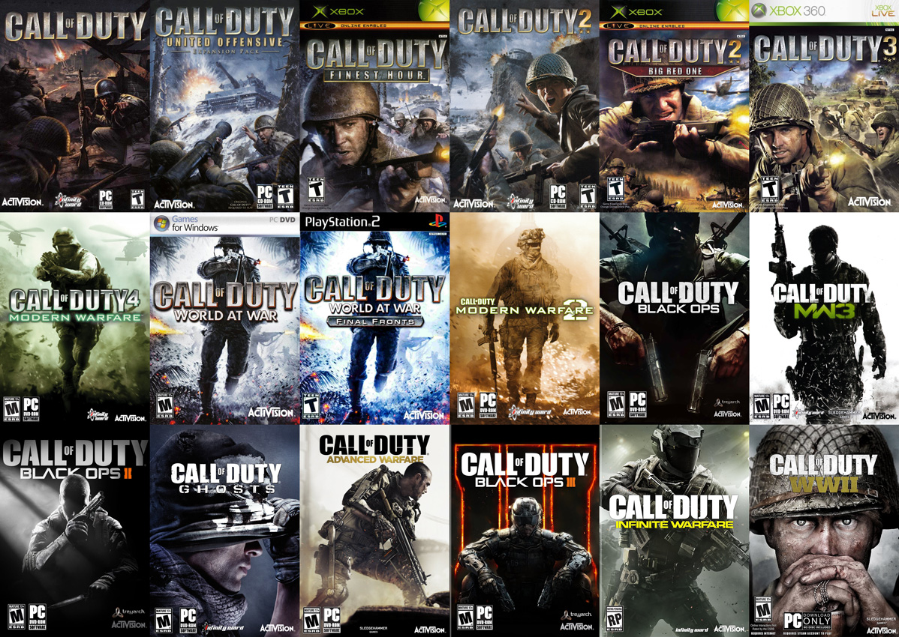
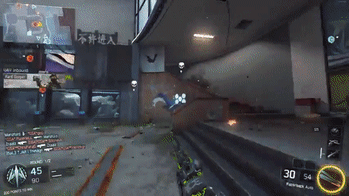

By Nick Rigney
Whether you play it or not, you have most likely heard of the very large franchise Call of Duty, better known as CoD. With hundreds of millions of players, Call of Duty has become a very popular first-person-shooter. There are currently 14 core games in this franchise. Here are several useful tips and tricks to getting better at this first person shooter so one day you might be able to do this..
*Disclaimer* These tips and tricks will be shown through a console controller rather than a keyboard, it will also be shown on the default setting.